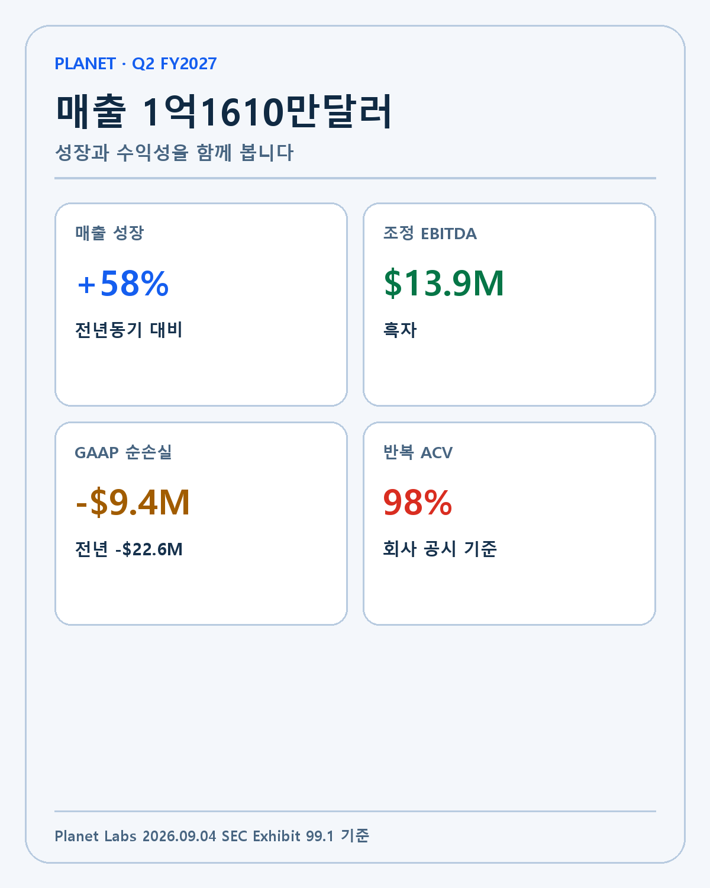
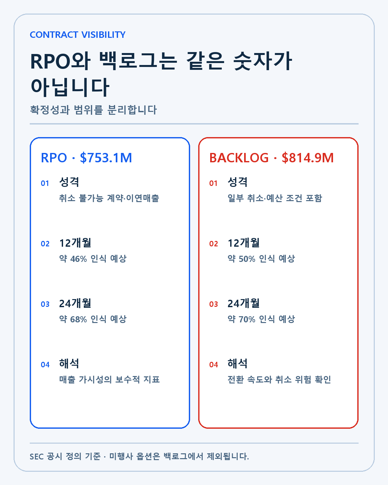
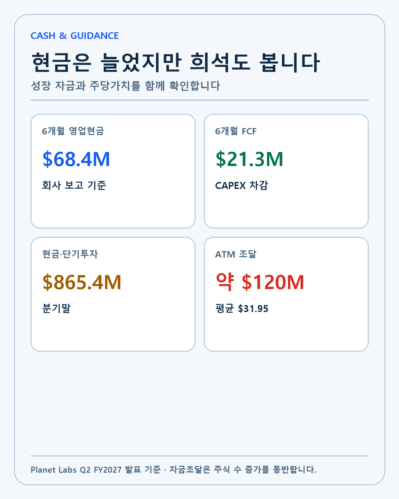
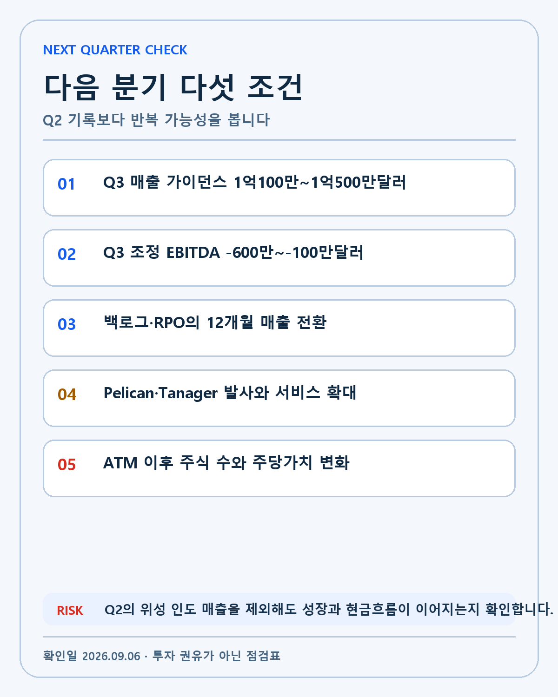

PLANET LABS · DEEP RESEARCH
플래닛랩스 FY2027 2분기 실적 분석: 매출 58% 성장 뒤의 백로그·현금흐름·희석
플래닛랩스 매출 1억1610만달러, RPO·백로그, 영업현금흐름과 ATM 희석을 SEC 원문으로 검증합니다.
플래닛랩스는 2027회계연도 2분기에 1억1610만달러의 매출을 기록했습니다. 전년 동기보다 58% 늘어난 사상 최대 분기 매출입니다. 조정 EBITDA는 1390만달러 흑자, GAAP 순손실은 940만달러였습니다. 반복 ACV 비중은 98%로 제시됐고, 백로그는 8억1490만달러까지 늘었습니다.
겉으로 보면 성장과 수익성이 동시에 개선된 분기입니다. 그러나 장기 투자 판단에는 네 가지 질문이 남습니다. 58% 성장이 반복 구독 매출에서 나왔는지, 백로그가 실제 매출과 현금으로 얼마나 빨리 바뀌는지, 현금흐름 개선이 외부 자금조달을 제외해도 유지되는지, 위성군과 AI 제품 투자가 주당가치를 키우는지입니다.
이 보고서는 SEC에 제출된 2분기 실적자료와 2026년 7월 31일 종료 분기 10-Q를 기준으로 작성했습니다. 회사의 가이던스는 실제 결과가 아니며, 비GAAP 지표는 GAAP 지표와 함께 읽습니다.
투자 결론을 먼저 정리하면
이번 실적은 플래닛랩스가 지구관측 위성 데이터를 실제 정부·기업 예산으로 전환하고 있다는 증거를 강화했습니다. 매출 규모가 커졌고 조정 EBITDA가 흑자를 유지했으며 상반기 영업현금흐름도 플러스를 기록했습니다. 8억달러를 넘는 백로그와 7억5310만달러의 RPO는 향후 매출 가시성을 높입니다.
동시에 분기 매출에는 스웨덴 군에 인도한 위성 관련 수익이 포함됐습니다. 3분기 매출 가이던스는 1억100만–1억500만달러로 2분기보다 낮고 조정 EBITDA도 적자를 예상합니다. 회사는 ATM으로 약 1억2000만달러를 조달했습니다. 현금 여력은 늘었지만 기존 주주의 주당가치에는 희석이 생길 수 있습니다.
따라서 이번 분기를 완성된 고수익 소프트웨어 기업으로 해석하지 않습니다. 지구관측 데이터 사업이 규모와 현금흐름의 문턱을 넘기 시작했다는 긍정적 증거와, 프로젝트성 매출·총마진·자본조달을 계속 확인해야 한다는 반대 증거가 함께 있습니다.
손익계산서: 58% 성장의 질을 분해합니다
2분기 매출은 1억1610만달러로 전년 동기 대비 58% 증가했습니다. 회계연도 상반기 매출은 2억1020만달러로 전년 같은 기간 1억3970만달러보다 약 51% 늘었습니다. 한 분기만의 기저효과가 아니라 상반기 전체에서도 높은 성장이 확인됩니다.
GAAP 매출총이익률은 57%로 전년 동기 58%보다 낮아졌고, 비GAAP 매출총이익률은 59%로 전년 61%보다 낮아졌습니다. 매출 성장률이 높아도 매출 믹스와 위성 인도, 서비스 제공 비용에 따라 총마진은 하락할 수 있습니다. 소프트웨어와 데이터 구독의 비중이 높아질수록 마진이 개선될 것이라는 기대는 실제 분기 믹스로 검증해야 합니다.
GAAP 순손실은 940만달러로 전년 동기 2260만달러보다 줄었습니다. 조정 EBITDA는 1390만달러로 전년 640만달러보다 증가했습니다. 조정 지표는 주식보상 등 일부 비용을 제외하므로 경영 효율성을 보는 보조자료입니다. 주주의 경제적 비용을 판단할 때는 GAAP 순손실과 주식 수 변화도 함께 봅니다.

| 항목 | FY2027 Q2 | 비교 | 판단 경계 |
|---|---|---|---|
| 매출 | $116.1M | 전년 대비 +58% | 위성 인도 매출 포함 |
| GAAP 총마진 | 57% | 전년 58% | 믹스와 원가 확인 |
| 비GAAP 총마진 | 59% | 전년 61% | 제외 항목 대조 |
| GAAP 순손실 | -$9.4M | 전년 -$22.6M | 손실 축소 |
| 조정 EBITDA | $13.9M | 전년 $6.4M | 다음 분기는 적자 가이드 |
| 반복 ACV 비중 | 98% | 회사 정의 | 분기 매출 구성과 다름 |
반복 ACV 비중 98%는 사업의 계약 구조가 반복적이라는 긍정적 신호입니다. 하지만 ACV와 회계 매출은 같은 지표가 아닙니다. ACV는 계약의 연간 가치에 관한 회사 정의이며, 특정 분기에 인식되는 매출은 인도 시점과 수행의무에 따라 달라집니다. 2분기 성장률을 그대로 다음 분기에 적용하지 않는 이유입니다.
RPO와 백로그: 15% 차이를 어떻게 볼 것인가
RPO는 7억5310만달러, 백로그는 8억1490만달러입니다. 두 지표의 차이는 6180만달러입니다. 숫자가 클수록 무조건 좋은 것이 아니라 계약의 취소 가능성과 예산 조건, 인식 시점을 이해해야 합니다.
RPO는 취소 불가능한 계약에 남은 수행의무와 이미 청구됐지만 매출로 인식되지 않은 금액을 중심으로 합니다. 회사는 RPO의 46%를 12개월, 68%를 24개월 안에 매출로 인식할 것으로 예상했습니다. 보수적인 매출 가시성을 볼 때 유용합니다.
백로그에는 일부 취소 가능 계약, 정부 예산 배정이나 과업지시가 필요한 금액이 포함될 수 있습니다. 미행사 옵션은 제외됩니다. 회사는 백로그의 50%를 12개월, 70%를 24개월 안에 인식할 것으로 예상했습니다. RPO보다 범위가 넓은 만큼 전환 지연과 취소 가능성을 더 주의해야 합니다.

백로그를 기업가치에 적용할 때는 세 가지를 확인합니다. 첫째, 분기마다 소진된 금액보다 신규 수주가 많이 들어오는지 봅니다. 둘째, 12개월 인식 예상 비율이 실제 매출로 이어지는지 추적합니다. 셋째, 정부 계약에서 최대 금액과 의무 구매 금액을 구분합니다.
회사는 8월에 미국 국가지리정보국으로부터 800만달러 계약을 받았고, 독일 정부 입찰에서 5년간 최대 2500만유로 규모의 대상자로 선정됐습니다. 유럽 국방·정보 분야의 7자리 달러 1년 계약도 발표했습니다. 이는 수요의 방향을 보여 주지만 최대 금액 전부가 즉시 확정 매출이라는 뜻은 아닙니다.
현금흐름: 사업이 만든 현금과 조달한 현금을 분리합니다
회계연도 상반기 영업활동현금흐름은 6840만달러였습니다. 자유현금흐름은 2130만달러, 회사의 조정 자유현금흐름은 2880만달러였습니다. 분기말 현금·현금성자산과 단기투자는 8억6540만달러로 보고됐습니다.
영업현금흐름이 플러스라는 점은 중요합니다. 위성 제조와 발사, 지상 시스템, 데이터 처리 인프라는 상당한 자본이 필요합니다. 고객에게서 들어오는 현금이 운영과 일부 투자를 감당하기 시작하면 외부 자금에 대한 의존도가 낮아질 수 있습니다.
그러나 현금 잔액 전체를 영업 성과로 보면 안 됩니다. 플래닛랩스는 ATM 프로그램을 통해 약 1억2000만달러를 조달했고 평균 순매각 가격은 주당 31.95달러였습니다. 이 돈은 현금 여력을 높이지만 주식 수를 늘립니다. 기업 전체의 성장과 주주 한 주의 가치가 항상 같은 속도로 움직이지 않는 이유입니다.

희석을 판단할 때는 증자 비율만 보지 않습니다. 새 자본이 Pelican·Tanager 위성군, 데이터 플랫폼, AI 제품에 투입돼 추가 매출과 현금흐름을 얼마나 만드는지 봅니다. 투자수익률이 자본비용보다 높다면 증자는 해자를 넓힐 수 있습니다. 반대로 매출이 늘어도 주당 매출과 주당 현금흐름이 개선되지 않으면 기존 주주에게 돌아오는 복리는 약해집니다.
주식보상도 같은 맥락입니다. 조정 EBITDA에서 제외되더라도 실제 주식 수와 주당가치에는 영향을 줍니다. GAAP 손익, 희석주식 수, 현금흐름표를 함께 보는 이유입니다.
위성군과 AI 제품: 기술이 사업 해자가 되는 조건
회사는 Pelican-11을 발사해 궤도상의 고해상도 Pelican 위성을 10기로 늘렸습니다. Tanager-2와 SuperDove 18기는 Transporter-18 발사를 위해 출하했습니다. 위성군이 커지면 특정 지역을 더 자주 촬영하고 더 높은 해상도의 데이터를 제공할 가능성이 커집니다.
하지만 위성 수만으로 해자를 평가하지 않습니다. 촬영 빈도, 해상도, 지연시간, 데이터 품질, 과거 아카이브, 고객 워크플로우 통합, 분석 도구가 함께 작동해야 합니다. 고객이 원시 이미지를 직접 해석해야 한다면 도입 비용이 높습니다. 탐지와 변화 분석, 경보까지 제공할수록 의사결정 시스템에 깊게 들어갈 수 있습니다.
플래닛랩스는 AI 애플리케이션을 오픈 베타로 공개했습니다. 기술 데모가 유료 제품이 되려면 정확도와 재현성, 고객의 검증, API 통합, 계약 단가가 필요합니다. 국방·농업·보험·공급망 고객은 같은 이미지를 보더라도 서로 다른 신뢰도와 지연시간, 보안 요구를 가집니다.
지구관측 데이터의 잠재적 해자는 네트워크 효과보다 데이터 축적과 운영 학습에 가깝습니다. 오랜 기간 같은 지역을 반복 촬영한 아카이브는 변화 탐지와 모델 학습에 유용합니다. 그러나 경쟁 위성, 정부 자체 위성, 항공·드론 데이터, 다른 상업 제공자와의 대체 가능성도 존재합니다. 해자는 가능성이지 자동으로 보장되는 결과가 아닙니다.
다음 분기 가이던스가 주는 경고
회사는 3분기 매출을 1억100만–1억500만달러로 예상했습니다. 2분기 실제 매출 1억1610만달러보다 낮습니다. 비GAAP 총마진은 56–58%, 조정 EBITDA는 600만–100만달러 적자를 안내했습니다. 2분기의 매출과 흑자를 직선으로 연장하면 안 된다는 신호입니다.
연간 매출 가이던스는 4억3000만–4억4100만달러, 연간 조정 EBITDA는 300만–1000만달러 흑자입니다. 연간 목표가 유지되려면 하반기 매출과 비용 관리가 중요합니다. 위성 인도 매출의 분기 변동과 데이터 구독의 반복성을 분리해 확인해야 합니다.
3분기가 가이던스 안에 들어와도 세부 내용은 다를 수 있습니다. 매출이 상단에 도달했지만 총마진이 낮고 현금흐름이 약할 수 있고, 매출이 중간이더라도 반복 계약과 갱신이 좋아질 수 있습니다. 숫자 하나보다 수익의 질을 봅니다.
강세·기준·약세 시나리오
강세 시나리오
3분기 매출이 가이던스 상단에 도달하고 반복 데이터 매출이 증가합니다. RPO와 백로그가 예상한 속도로 매출로 전환되고 신규 계약이 소진분보다 빠르게 채워집니다. 연간 조정 EBITDA 흑자와 영업현금흐름 플러스가 유지됩니다. Pelican과 AI 제품이 실제 계약 확대에 기여하면 데이터 해자에 대한 확신을 높일 수 있습니다.
기준 시나리오
3분기 매출은 2분기보다 낮지만 가이던스 안에서 움직입니다. 위성 인도 매출의 변동을 데이터 구독 성장이 일부 상쇄하고, 백로그 전환은 회사 예상 범위 안에 있습니다. 현금은 충분하지만 주식 수가 늘어 주당 지표 개선은 기업 전체 성장보다 느립니다. 이 경우 연간 성장과 주당 현금흐름을 중심으로 추적합니다.
약세 시나리오
위성 인도 이후 매출 성장률이 빠르게 둔화하고, 정부 계약의 예산·인도 일정이 지연됩니다. RPO와 백로그가 매출로 바뀌는 속도가 낮아지고 추가 증자가 반복됩니다. AI 제품의 유료 전환이 확인되지 않거나 총마진이 계속 하락하면 투자 논리는 약해집니다.
무효화 조건은 단기 주가 하락이 아닙니다. 기술 경쟁력 약화, 촬영·분석 품질의 경쟁 열위, 주요 고객 이탈, 창업자와 경영진의 자본배분 변화, 반복 매출과 현금흐름의 구조적 악화를 봅니다. 가격은 기대수익률을 바꾸지만 사업의 사실과 구분합니다.
내 투자 원칙과 플래닛랩스의 위치
내 투자 우선순위는 기술, 해자, 창업자, 성장률, 현금흐름입니다. 플래닛랩스는 미래에 더 필요해질 지구 데이터와 분석 인프라를 만든다는 점에서 기술과 해자 후보에 해당합니다. 정부와 기업이 기후, 국방, 농업, 공급망의 변화를 더 자주 확인할수록 관측 빈도와 분석 자동화의 가치는 커질 수 있습니다.
이번 실적은 성장률과 현금흐름에서 긍정적 점수를 늘렸습니다. 하지만 2분기의 58% 성장을 영구 성장률로 사용하지 않습니다. 다음 분기 가이던스, 총마진, 백로그 전환, 주식 수를 함께 봅니다. 집중투자가 잘못이라는 전제에서 글을 쓰지 않지만, 기술에 대한 믿음이 수치 검증을 대신하게 두지도 않습니다.
나는 월급날 정기 투자를 이어가며 펀더멘털이 유지되는 한 보유를 계속하는 편입니다. 추가매수 판단에서는 회사가 좋은가와 현재 가격에서 기대수익률이 충분한가를 분리합니다. 좋은 기업도 너무 높은 가격에서는 미래 수익률이 낮아질 수 있습니다.
다음 실적까지 기록할 다섯 항목

- 3분기 매출 1억100만–1억500만달러 가이던스 달성 여부
- 조정 EBITDA 600만–100만달러 적자 범위와 GAAP 손실
- RPO·백로그의 12개월 매출 전환과 신규 수주
- Pelican·Tanager 발사 일정과 서비스 품질 개선
- ATM 이후 희석주식 수, 주당 매출, 주당 현금흐름
추가로 현금 잔액 자체보다 현금의 출처를 기록합니다. 영업에서 들어온 현금, 증자에서 들어온 현금, 자본지출로 나간 현금을 분리하면 성장의 자립도를 볼 수 있습니다. 계약 발표에서는 최대 금액과 의무 금액, 계약 기간, 옵션을 구분합니다.
실적 복기는 발표 당일과 다음 분기 직전을 나눠서 합니다. 발표 당일에는 SEC 원문, 손익계산서, 현금흐름표, 가이던스를 고정하고 시장 반응과 섞지 않습니다. 다음 분기 직전에는 그때 적어 둔 다섯 조건 중 무엇이 실제 계약·발사·현금흐름으로 확인됐는지 대조합니다. 새로운 정보가 없는데 주가만 움직였다면 기업 판단과 가격 판단을 분리합니다. 이렇게 해야 좋은 뉴스가 나올 때마다 투자 논리를 새로 만들거나, 나쁜 가격 움직임을 펀더멘털 훼손으로 오해하지 않을 수 있습니다.
플래닛랩스의 2분기는 분명 강했습니다. 매출 규모, 조정 EBITDA, 영업현금흐름, 계약 가시성에서 이전보다 더 많은 증거가 쌓였습니다. 동시에 총마진 하락, 프로젝트성 인도 매출, 낮은 다음 분기 가이던스, ATM 희석은 반대 논리로 남습니다. 한쪽을 지우지 않고 다음 실적에서 어느 쪽이 강화되는지 확인하는 것이 이 리서치의 결론입니다.
이 글은 개인 투자 연구이며 특정 종목의 매수·매도를 권유하지 않습니다. 회사의 전망과 비GAAP 지표는 실제 결과와 다를 수 있고, 모든 투자 판단과 책임은 투자자 본인에게 있습니다.
작성 방법
2026년 9월 6일 기준 공식 원문을 우선하고 확인된 사실, 회사 전망, 시나리오와 UNKNOWN을 분리했습니다.
개인 투자 기록이며 특정 종목이나 금융상품의 매수·매도를 권유하지 않습니다.